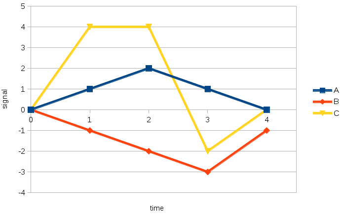
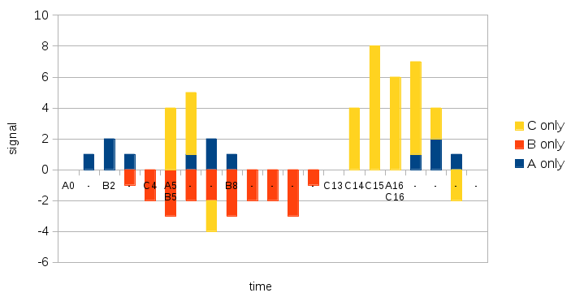
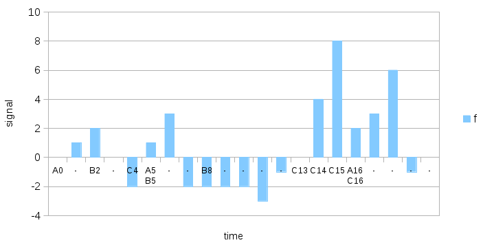

Feedback analysis
This is the outline of an algorithm for decomposing the output of a time-discrete, linear, time-invariant system into a sum of responses to events. Some events are of the same type and are expected to produce the same output. The goal is the determine incrementally the response function for each event type.
Context: discrete events and delayed effects
We have a system which produces actions. An action is recorded as an event occurring at a given date. The time scale is discrete.



Problem: decompose signal into sum of effects
Solution
Glossary
- LTI system: linear time-invariant system.
- response: time-domain function that defines the output associated with a given input.
- event: a pair (event type, date).
- event type: a set of events that are expected to produce the same response.
- experience: the number of times a binary input node has ever been active.
- contribution (to the error): the share, relative to the other inputs, by which the weight of an input is corrected. It is set to decrease as the node's experience increases.